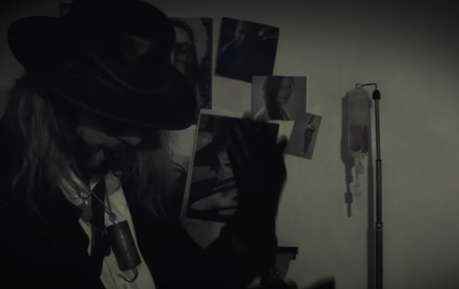
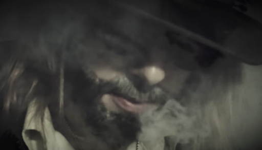
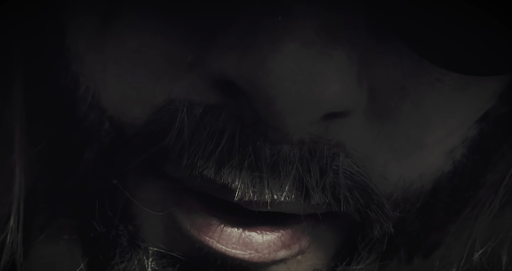
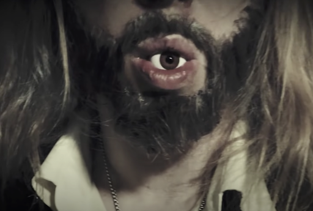

*claps*
Well, well, well. Would you look what the lycan dragged in, huh. *laughs*
I'd say take a seat, but, seems like you already found one.
They finally caught up with ya, huh? After all your running around, trying to escape. They finally gotcha. “Who?” Well who do you think? Lady supersized bitch, ugly-ass psycho doll, and that moronic freak.
You know. It was all a test. Uh-huh. To see if you're strong enough to be part of Miranda's family. Oh yeah.
You don't believe me, do ya. Hotshot. Well, it's true. They've been giving you the run-around while they chase you around.

But this, this is the ultimate test. Not part of my family, but to be part of me. So what do you say, friend? You ready to play?
Good.
Well. You better cool your jets and strap yourself in, hotshot. Because this is gonna be a bumpy ride. *tightens strap* Tight enough for ya? Good.
Certainty. What does that mean to you, huh? Well, certainty's a sure thing, right? But (and it's a big but) there is only one thing that is certain in the world. Do you know what that is?
Uncertainty. The only thing that you can rely on is that there's nothing to lie on. Something starts. But it doesn't end where it began.So it's impossible to predict momentum gains. Attractions. Refractions. Objections. Rejections.
There's a saying in Japan. “The nail that sticks out must be hammered back in.” But I got a similar saying about nails. My saying: “If there's a cavity, fill it with metal.”
*grabs a hammer* Not my usual tool, but it'll do the trick.
Pin the nail in the donkey, huh. Hey, listen. It'll be alright. Heisenberg's here to help you. To help you realize things that you never knew. To help you see things that you've never seen. And to help you fuckin be something that you could never have been.
How am I gonna do that? I'm gonna stick a nail in ya. You ready? Good. *hammers a nail in*
That hurt? Oh shoot. I'm sorry. Oh, I take it back. If I'd have known it was gonna hurt, I wouldn't have done it.
But shit, here we are. We already started, huh. Have another, for luck. Let's get this one on a bone this time. *hammers a nail in*
Huh. You got strong bones. You been drinking plenty of milk. Ya got stem cells.
A lotta people bad-mouth stem cells. That it's unnatural, playing God.
Well, when you're Dyzan, you kinda are God. if you catch my drift.
Another, pour vouz. *hammers a nail in*
And did it ever cross your mind that when you enter the den of a beast, the factory of monstrosity, that you would become one yourself? You stare into your piss long enough, it starts pissin back at ya.
You're probably asking yourself, *hammers a nail in* ‘KK? Sweet sweet KK? Why are you hammering nails into me, huh? Bub?' I gotta weigh you up after I weigh you down. I gotta be able to control ya. Like, uh, whatdya call 'em? That's it. Ugly-ass psycho doll. Mm hmm. So this one's going in your knee. *hammers a nail in*
What did you expect? What did you really think was going to happen, huh? You thought you were gonna waltz in here and kill me. Move up the family line to Miranda. Well, fuck you, man. I haven't died yet. And that is a pretty good high score. I intend to go for the highest. Your other knee, please. *hammers a nail in*
*tries the cigar* Damn thing went out. Wait right there. Don't go anywhere, huh? *lights the cigar*
It's okay. *drops a nail* You got lucky. I dropped one. *struggles while getting another nail* Nothin works in this fuckin place. *hammers a nail in*
You think you're so smart. Well, you might be sitting, but you ain't pretty. Whatever you do, don't look behind you. One more nail. *hammers a nail in*
Good doggie. You have performed admirably. For that, you will be rewarded. Oh yes. You will be rewarded.
I love cigars. *does some sort of outburst*
*shakes container* What do you think's in here? I'll give you a clue. It's french fries.
Well, when I say french fries, what I mean is: adrenaline.
I was a little worried about you, you know. Falling asleep or falling dead, you know, stuff like that. So I thought that I would help you to stay awake. Now, I ain't gonna tell you when the shot's coming. But I'll give you a clue it's right now. *sticks needle in*
See? That was your treat. Adrenaline Adrenal in. The line of adrena. Adrenaline.
Unfortunately now I gotta cut some bits off of you. It ain't nothin' poi-sonal. Just something I gotta do. Of course, you're confused. You could say, “KK. Mr. Karl Heisenberg. Please don't cut off parts of me. Pleeease don't put this weird fuckin pokey thing (not pokemon, pokey thing) in me.” But then I'd have to say to you.. “What's in it for me? What was in it for me?” *cuts something off*
See? It's not sp- *interrupted by noise* Dammit, I'm talkin here. Wait.
*shouting* Shut your fuckin' hole!
I am so sorry about that. Parishioner, forgive of me. That fuckin freak just sings all day long. Where were we? Oh yes. *cuts something off*
I cut my glove! Oh shit. *cuts more things off*
You havin fun yet? Don't worry, I am. You know, it didn't have to be this way. You coulda joined forces with me. We coulda been allies. Comrades. Siblings in arms. But nooooo, you had to go your own way. Like Fleetwood fuckin' Mac. Well how'd that turn out for you? How are you feeling about it?
*continues to cut things off*
Yeah, I like listening to music. Hope it doesn't bother you. Your comfort is my highest priority. And you got such precious little digits. Uh huh.
You know what I do here? In this factory? 10 points to fuckin Hufflepuff. That's right, I make things. Not just things. I make those. They. Them. I make me. I make you.
You are stressed.
*voices from outside* Can you hear that fuckin noise?
Do you know what's in this vial? Iron. A supplement, if you will. I need to put it in you, if that's alright. Arm out. *injects iron in a syringe*
*wipes you off with a cloth*
Now, my healing hands must be pressed against your body in order to get the iron moving. So, a massage. *palpates you*
*sings* What kinda music do you like? I've always been a fan of freeform jazz. *scats*
Well. Good. All that iron in you. Must be feelin pretty heavy, huh? Don't worry. It's all for the greater good. The greater good of Heisenberg. *scats* *continues palpating*
*starts dancing while singing*
Please open your eye. I can't hear you. Open your eye. Perfect. This caliper will keep it open. Here we go.
What? I went to the toilet before. Now, here. Perfect. *pulls out a scalpel* The right tool for the job.
I regret to inform you that I must take out one of your eyes. A harmless, painless procedure. And do not worry for my safety. I am perfectly fine.

You might hear a slight popping sound. This *rustles* is just globules from your eye. How does it feel? Good, good. Pop, pop, pop, pop, pop.
Alright. Now get the scoop. I gotta scoopy scoopy, I gotta scoopy you up. *pops out your eye* There we go. Eyes to see you. *puts eye in mouth* *spits it out*

You know, an eye for an eye would make this world fine. No? Well, you obviously can't see how humorous I am.
You lack the vision to realize my plan. I need to put something in its place. This won't hurt a bit. *holds up pipe* Look at it. Follow it with your good eye. The one that's still there. Remember what it was like to see through it. Remember everything that you've seen. The lady, supersized bitch. The ugly-ass psycho doll. The moronic festering swamp freak. And me. Handsome Heisenberg. *covers your eye and snaps something*
There, you see? It wasn't so bad. All this with your eyes. Good.
Stop me if you've heard this one before. But there's more. Sit tight.
This will hurt you more than it will hurt me. *snaps pliers* What time is it? I'm askin you for the time. Yes. 2:30. And I'm the dentist. Oh baby, oh. Open your mouth. *pulls a tooth*
Thank you. One more. *pulls a tooth* Thank you, and I lied. One more. *pulls a tooth*
Here. *puts in some metal* It's not candy. But it's the next best thing. Mon cher. Mon dieu.
Hm? Why don't I just kill you? Where'd be the fuckin fun in that? Oh no no no no no. This is fun. And you get to live forever. So grow up.
*licks razor* Sharp enough. *slices something off you*
*looks up at you* Stop squirming. *continues cutting*
You know, the being of flesh is addicted to the ways of the flesh. But a being of iron, steel, copper, (but not aluminum), the metal being, is addicted… … ... to strength.
Who would you rather date? The giant or the doll? Yeah me? Personally, I think I'd go for the swamp freak. Yeah. More my type.
Well, we're almost there. How are you feeling? Good. Well, that's very good. Because you know, if this doesn't work, I'm just gonna kill you.
*starts to dance with a knife in hand* Dance with me. Don't be shy. Dance with me. Get into the groove. Vogue. Pose. Make yourself known. Stand out from the crowd. Be whoever the fuck you wanna be. *sticks knife in*
Alright. The final test of your efficacy, and my efficiency. The final test is simple. Come to me. *reaches* Come on, don't be shy. You gotta do it or you're gonna die!
*reaches, straining*
Damn it. Fuck! Didn't work. What a waste of tools! I feel like the tool. That's how you made me feel. Shit. Well, you left me little options here.
*noises from outside* Shut the fuck up!! Thank you.
You have left me w- where was I? With no options. Here. Here! I wanted you to help me. Instead, you made a bed of shit, and I gotta sleep in it. And I don't like the smell of shhhit. Do you like the smell of shhhit??
So, you know how I told you not to look behind you? Well you're gonna have to look behind ya. And I'm afraid you're gonna have to do it… NOW.